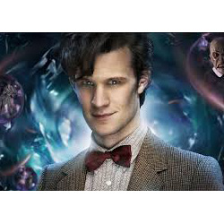

| Home | The Doctors | The Companions | The Villains |
|
|||
The DoctorsThe character of the Doctor was initially shrouded in mystery. All that was known about him in the programme's early days was that he was an eccentric alien traveller of great intelligence who battled injustice while exploring time and space in an unreliable time machine, the "Tardis" (an acrynom for time and relative dimension(s) in space), which notably appears much larger on the inside than on the outside (a quality referred to as "dimensional transcendentality"). |